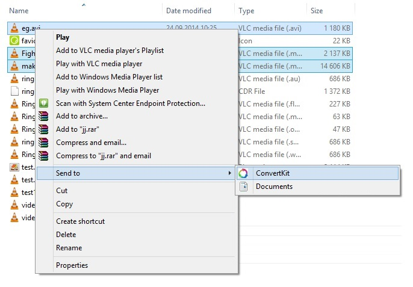
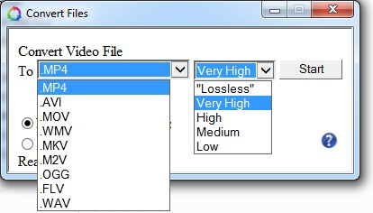

Thank you for installing ConvertKit
Now you can right click in windows file explorer to easily convert a variety of different formats!
»» 
How do I extract audio from a video file?
Right click the video file, Send to ConvertKit, choose the output file to be wav
Why is the Lossless in quotes?
Not all formats support Lossless, so the formats that does not support it, will just have the Highest possible quality setting.
What formats does this support?
Almost any formats are supported. I use FFMpeg and ImageMagick to convert the files, and they support alot of different formats! I have not added too many formats to the GUI though, to keep it as simple as possible.
I want to merge an audio file into a video file, can it do that?
Yes, if you only select two files (one video and one audio), the application will check the length og the two files, and if they match, it will merge them to a new video file!
This program was made possible thanks to these guys:
www.FFMpeg.org
www.ImageMagick.org